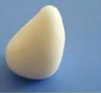
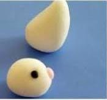
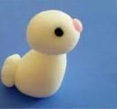

Hacer una bolita y aplastar de la parte de arriba para que quede en forma de piquito arriba.

Hacer una bolita blanca, dos bolitas chiquitas negras y una bolita mediana rosa, colocar las bolitas negras en la bolita blanca para que sean sus ojos y la bolita rosa en medio de ellos, para que sea su nariz del conejo

Paso 3 Colocar su cabeza del conejo en su cuerpo, y poner una bolita de arcilla blanca atrás, cómo si fuera su colita.

Paso 4 Hacer otras dos bolitas de arcilla blanca y dos bolitas pero un poco aplastadas, para que sean sus patas.
Paso 5 Colocar sus dos patas a sus lados y atrás de ella la bolita blanca, en ambas.
Hacer dos bolitas con arcilla blanca y aplastarlas que queden en forma de "D" y otras dos pero más pequeñas de arcilla rosa y ponérselo al conejo de orejas, de forma de que queden acostadas.